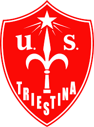

Triestina

L'Unione Sportiva Triestina Calcio 1918, meglio nota come Triestina, è una società calcistica italiana con sede nella città di Trieste. Milita in Serie C, la terza divisione del campionato italiano.
Il club prosegue, dopo una serie di rifondazioni, la tradizione sportiva dell'U.S. Triestina, nata il 2 febbraio 1919 (dopo un accordo preliminare datato 18 dicembre 1918) dalla fusione dei club F.C. Trieste e C.S. Ponziana[1].
Nell'agosto 2012, in forza dei 74 campionati professionistici a cui partecipò il sodalizio alabardato, e in applicazione dell'articolo 52 comma 10 delle NOIF, la FIGC permise l'iscrizione in Eccellenza alla nuova società, rilevando il titolo sportivo della vecchia. Al momento della nascita la società ha avuto in affitto dai tifosi lo stemma[2] del precedente sodalizio, l'Unione Sportiva Triestina, a sua volta creata nel 1994 sulle ceneri del club originario.
È l'unica società ad aver militato nella Serie A a girone unico in un periodo in cui la sua città non si trovava in territorio italiano: dal 1947 al 1954, infatti, la città fece parte del Territorio Libero di Trieste, separato dall'Italia.